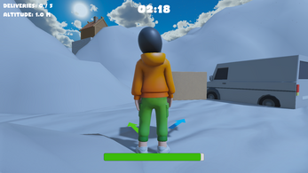
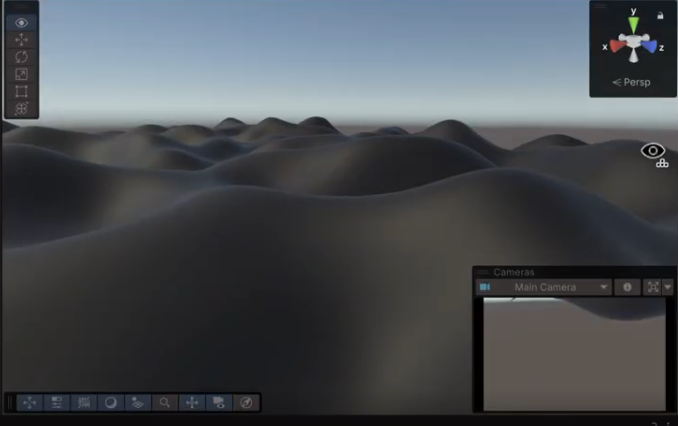

Snow Dash (Unity)
October 2025
Third person package delivery game where the player must navigate mountain terrain while avoiding obstacles and racing against the clock to deliver packages.
Team: Worked with a team of 5 people.
Responsibilities: Implemented climbing and grapple mechanics, random player spawn points, and procedural mesh generation.
Tech: Unity, C#
Process
Inital Idea

Inital Mesh Generation
Inital Prototype
Summary of Contributions
Implemented Climbing and Grapple Mechanics
Designed and implemented climbing and grapple mechanics to enhance player movement and navigation.
Created a system for detecting climbable surfaces and implementing climbing interactions.
Developed a grapple mechanic that allows players to swing across gaps and reach otherwise inaccessible areas.
Random Player Spawn Points
Implemented a system for randomly spawning the player at different locations on the map to increase replayability and challenge.
Ensured that spawn points were strategically placed to provide a balanced gameplay experience.
Procedural Mesh Generation
Created a procedural mesh generation system to dynamically generate terrain and obstacles in the game world.
Implemented algorithms for generating realistic mountain terrain and obstacles that fit the game's aesthetic and gameplay requirements.
What I Learned
Procedural Mesh Generation is Hard
Implementing procedural mesh generation was a significant challenge that required an understanding of 3D geometry, algorithms, and optimization techniques.
It involved using complex algorithms to generate terrain and obstacles that were both visually appealing and functional within the game world.
I learned how to optimize the mesh generation process to ensure smooth performance while maintaining the desired level of detail.
Collaboration and Communication are Key
Working with a team of 5 people highlighted the importance of effective collaboration and communication in game development.
Regular meetings, clear documentation, and open communication channels were essential for coordinating our efforts and ensuring that everyone was on the same page throughout the development process.
For example, initally one of my teammates was responsible for the mesh generation. However as I was responsible for the player movement mechanics and randomly spawning, I had to integrate and adapt their work to fit within our overall game design. Thus I ended up collaborating with my teammate to synchronize the mesh generation.
Through this experience, I learned how to effectively collaborate with others, share ideas, and resolve conflicts to create a cohesive and successful game.